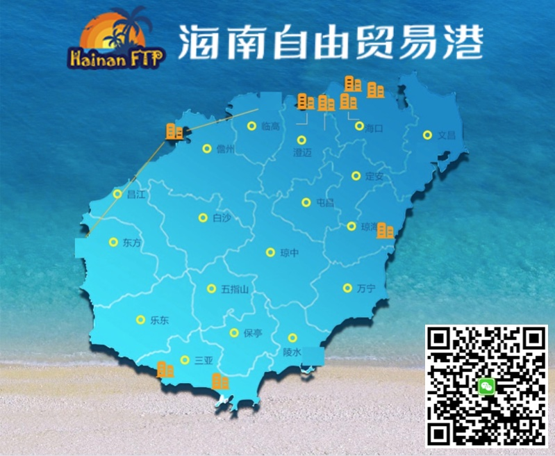

计算机技术分享：中国速度
apt、composer、nodejs 等常用工具在国外，内地开发者访问较慢，而工信部特批的海南自贸港「国际互联网数据专用通道」可高速访问，本站分享内地镜像加速信息，让开发者感受「中国速度」。



apt ubuntu
find /etc/apt/ -name "*.list" -print0 | xargs -0 sed -i 's/[a-z]\+.ubuntu.com/mirrors.aliyun.com/g'
find /etc/apt/ -name "*.list" -print0 | xargs -0 sed -i 's/[a-z]\+..ubuntu.com/mirrors.cloud.tencent.com/g'
apt debian
注意：apt 使用 HTTP，阿里云、腾讯云的源都支持；如果用了 HTTPS 源，则 debian docker 需要额外安装 ca-certificates，导致体积变大。
find /etc/apt/ -name "*.list" -print0 | xargs -0 sed -i 's/[a-z]\+.debian.org/mirrors.aliyun.com/g'
find /etc/apt/ -name "*.list" -print0 | xargs -0 sed -i 's/[a-z]\+.debian.org/mirrors.cloud.tencent.com/g'
get docker
# https://docs.docker.com/install/linux/docker-ce/ubuntu/#install-using-the-convenience-script
curl -fsSL https://get.docker.com | sh -s -- --mirror Aliyun
# curl -fsSL http://get-docker-com.hnftp.china-speed.org.cn | sudo sh --
sudo usermod -aG docker $USER
docker hub
sudo mkdir -p /etc/docker
sudo tee /etc/docker/daemon.json <<-'EOF'
{
"registry-mirrors": [
"https://hub-mirror.c.163.com"
]
}
EOF
sudo service docker restart
docker info
docker Azure
*.azk8s.cn 不再对外提供服务，仅限于 Azure China IP 使用。参考：Azure/container-service-for-azure-china#60
# docker pull mcr.microsoft.com/dotnet/core/runtime:3.1
# docker pull mcr.azk8s.cn/dotnet/core/runtime:3.1
# docker pull gcr.io/google_containers/hyperkube-amd64:v1.9.2
# docker pull gcr.azk8s.cn/google_containers/hyperkube-amd64:v1.9.2
get kubectl
# https://kubernetes.io/docs/tasks/tools/install-kubectl/#install-kubectl-on-linux
curl -LO http://storage-googleapis-com.hnftp.china-speed.org.cn/kubernetes-release/release/v1.18.4/bin/linux/amd64/kubectl
chmod +x ./kubectl
sudo mv ./kubectl /usr/local/bin/kubectl
kubectl version
get helm
# https://github.com/helm/helm/releases
curl -LO https://get-helm-sh.hnftp.china-speed.org.cn/helm-v3.4.2-linux-amd64.tar.gz
tar -zxvf helm-v3.4.2-linux-amd64.tar.gz
sudo mv linux-amd64/helm /usr/local/bin/
helm version
get composer
curl https://mirrors.cloud.tencent.com/composer/composer.phar -o /usr/local/bin/composer
curl https://mirrors.aliyun.com/composer/composer.phar -o /usr/local/bin/composer
chmod +x /usr/local/bin/composer
curl -sS http://getcomposer-org.hnftp.china-speed.org.cn/installer | sudo php -- --install-dir=/usr/local/bin --filename=composer
composer
composer config -g repo.packagist composer https://mirrors.aliyun.com/composer/
composer config -g --unset repos.packagist
composer lock
url_suffix='.dist.mirrors[0].url="https://mirrors.aliyun.com/composer/dists/%package%/%reference%.%type%"'
jq '."packages"[]'"$url_suffix" composer.lock \
| jq '."packages"[].dist.mirrors[0].preferred=true' \
| jq '."packages-dev"[]'"$url_suffix" \
| jq --indent 4 '."packages-dev"[].dist.mirrors[0].preferred=true' > composer.lock.tmp
mv composer.lock.tmp composer.lock
get nodejs npm
curl -sL https://deb-nodesource-com.hnftp.china-speed.org.cn/setup_14.x | sudo -E bash -
npm
注意：npm install 不使用 package-lock.json 中的完整下载链接（resolved 字段），而是使用 config registry。
# 淘宝
npm config set registry https://registry.npm.taobao.org
npm config set disturl https://npm.taobao.org/dist
npm config set electron_mirror https://npm.taobao.org/mirrors/electron/
npm config set sass_binary_site https://npm.taobao.org/mirrors/node-sass/
npm config set phantomjs_cdnurl https://npm.taobao.org/mirrors/phantomjs/
npm config set puppeteer_download_host https://npm.taobao.org/mirrors
npm config set chromedriver_cdnurl http://npm.taobao.org/mirrors/chromedriver
# 腾讯云
npm config set registry https://mirrors.cloud.tencent.com/npm/
npm config set sass_binary_site https://mirrors.cloud.tencent.com/npm/node-sass
npm config set chromedriver_cdnurl https://mirrors.cloud.tencent.com/npm/chromedriver
# 恢复默认
npm config delete registry
pip
mkdir ~/.pip
cat > ~/.pip/pip.conf << \EOF
[global]
index-url=https://pypi.doubanio.com/simple/
#index-url=https://mirrors.aliyun.com/pypi/simple/
#index-url=https://mirrors.cloud.tencent.com/pypi/simple/
EOF
go
# goproxy.io 采用 腾讯云香港
# go env -w GOPROXY=https://goproxy.io,direct
# goproxy.cn 采用 七牛大陆 CDN
go env -w GOPROXY=https://goproxy.cn,direct
gradle bin
官方 CDN 域名：downloads.gradle-dn.com 曾在中国落地，现已取消，无法继续使用。
# 腾讯云
distributionUrl=https\://mirrors.cloud.tencent.com/gradle/gradle-6.6.1-bin.zip
# 默认国外
distributionUrl=https\://services.gradle.org/distributions/gradle-6.6.1-bin.zip
gradle maven
Google maven 曾在中国落地，现已取消，需要内地加速。
mkdir ~/.gradle
cat > ~/.gradle/init.gradle << \EOF
def repoConfig = {
all { ArtifactRepository repo ->
if (repo instanceof MavenArtifactRepository) {
def url = repo.url.toString()
if (url.contains('repo1.maven.org/maven2')
|| url.contains('jcenter.bintray.com')
|| url.contains('maven.google.com')
|| url.contains('plugins.gradle.org/m2')
|| url.contains('repo.spring.io/libs-milestone')
|| url.contains('repo.spring.io/plugins-release')
|| url.contains('repo.grails.org/grails/core')
|| url.contains('repository.apache.org/snapshots')
) {
println "gradle init: [buildscript.repositories] (${repo.name}: ${repo.url}) removed"
remove repo
}
}
}
// 腾讯云 maven 镜像聚合了：central、jcenter、google、gradle-plugin
maven { url 'http://mirrors.cloud.tencent.com/nexus/repository/maven-public/' }
// 阿里云 https://help.aliyun.com/document_detail/102512.html
maven { url 'https://maven.aliyun.com/repository/central' }
maven { url 'https://maven.aliyun.com/repository/jcenter' }
maven { url 'https://maven.aliyun.com/repository/google' }
maven { url 'https://maven.aliyun.com/repository/gradle-plugin' }
maven { url 'https://maven.aliyun.com/repository/spring' }
maven { url 'https://maven.aliyun.com/repository/spring-plugin' }
maven { url 'https://maven.aliyun.com/repository/grails-core' }
maven { url 'https://maven.aliyun.com/repository/apache-snapshots' }
}
allprojects {
buildscript {
repositories repoConfig
}
repositories repoConfig
}
EOF
maven
sudo vi /etc/maven/settings.xml
<mirrors>
<mirror>
<id>tencent-maven</id>
<mirrorOf>*</mirrorOf>
<name>腾讯云公共仓库</name>
<url>http://mirrors.cloud.tencent.com/nexus/repository/maven-public/</url>
</mirror>
</mirrors>
maven wrapper
sed -i 's/repo.maven.apache.org\/maven2/mirrors.cloud.tencent.com\/nexus\/repository\/maven-public/g' ./.mvn/wrapper/maven-wrapper.properties
gem
gem sources --add https://gems.ruby-china.com/ --remove https://rubygems.org/
gem sources -l
# 确保输出只有 gems.ruby-china.com 一个
bundle
bundle config mirror.https://rubygems.org https://gems.ruby-china.com
acknowledgements
感谢 CODING 持续集成 提供免费的 Jenkins 云服务。
通过上述邀请链接注册，本站将获得流量奖励，供大家下载使用。